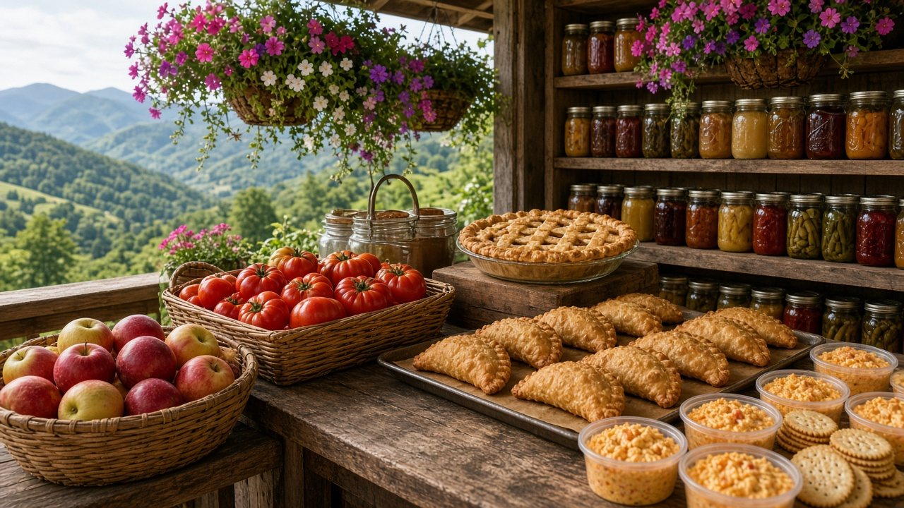

Fresh produce, from-scratch bakery items and a cult-favorite pimento cheese line from a family-owned market.
SINCE 1996
Sample photoFour flavors in their own line, also sold at Vintage Market Days events.
“THE BEST pimento cheese iv ever had! They have so many options of pimento cheese flavors and they are all fantastic!”RESTAURANTJI
Made from scratch in the bakery, alongside apple pies, sweet breads, cookies, pumpkin rolls and cakes.
“fried apple pies are delicious! … super friendly! 10/10 customer service”RESTAURANTJI
“I 😘 ve this produce market. Good service and great selections. They will make it right if something is not up to par. They also have beautiful flowering baskets and Amish canned goods too.”NEXTDOOR · MAR 2026
“Tasted & bought some their delicious Pimento cheese (plain) & divine Smoked Gouda Pimento cheese at Vintage Market Days in Hoover,AL. … May have to head to Johnson City for a “fix”; we live outside of Montgomery!”RESTAURANTJI · LATE 2024
4.6 on Google (163 reviews) · 4.6 on Restaurantji (83 ratings) · 15 Nextdoor recommendations
Please confirm the address: Google lists 3308 W Market St, and Nextdoor lists 3310 W Market St.
Please confirm the name: Nextdoor shows “Stanleys Produce and Bakery,” and Google shows “Stanley Produce Garden Center & Bakery.”